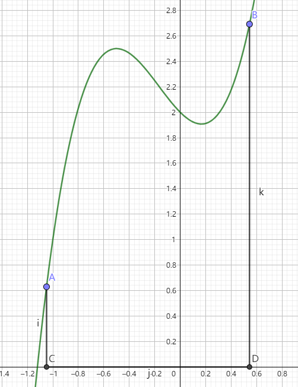

一种经典的数值积分算法
老文章, 可能有很多错误, 懒得修了
求面积诸法
Simpson法是一种经典的数值积分方法, 一个重要应用就是求不规则图形面积
说到不规则图形, 我们往往都是先从曲边梯形开始
曲边梯形$ABCD$就是下图中曲线$AB$、线段$AC$、$CD$、$DB$围成的图形, 我们想要求出它的面积

一个简单而直接的解决方案是: 把曲边梯形分成$n$段, 每一段用一些规则的几何图形去近似, 然后累加每一段的面积, 这样我们就得出结果了
可以看出, 上述过程的关键就是选择什么样的几何图形去近似
当然, 用不同的几何图形近似, 效果是不同的
用矩形去近似
大致这样

我们可以看出这种近似方法太粗糙了, 针对用矩形近似的方案, 我们可以做一些优化:
对于每一段, 我们取端点中点在函数上的对应点, 借助这个点来构造矩形:

这样看起来就舒服多了, 但感觉还是有些粗糙, 有没有更好的方法呢?
当然有了!
不过在继续之前, 我们先来看看如何实现这种方法
设$C(a,0)$, $D(b,0)$
那么
为了方便, 我们让每一段的长度相等, 即对于每一段, 均有
那么
用梯形去近似
大致这样

易知此法和上述的结果是一样的, 不过此法视觉效果好
有一些部分看起来已经足够精确了, 但感觉还是有些粗糙, 有没有更好的方法呢?
当然有了!
不过在继续之前, 我们还是先来看看如何实现这种方法
设$C(a,0)$, $D(b,0)$
那么
为了方便, 我们让每一段的长度相等, 即对于每一段, 均有
则
Simpson法
进入正题
Simpson法是先将原曲线近似成一段段抛物线, 然后再用Newton-Leibniz公式求每一段的面积

(因为笔者在GeoGebra里没找到根据三点画抛物线的工具, 所以这里用圆弧代替了QwQ)
可以看出, 此法效果相当不错
我们来看看如何实现
设$C(a,0)$, $D(b,0)$
为了方便, 我们让每一段的长度相等, 即对于每一段, 均有
对于每一段区间, 我们如下处理:
设起点为$x_{2i-2}$, 中点为$x_{2i-1}$, 终点为$x_{2i}$
我们要用过点$(x_{2i-2},f(x_{2i-2}))$, $(x_{2i-1},f(x_{2i-1}))$, $(x_{2i},f(x_{2i}))$的抛物线$g(x)=Ax^2+Bx+C$来取代$f(x)$
有
于是
故
一部分资料认为Simpson法只用一段抛物线替代, 即
下称此情况为三点Simpson法
自适应Simpson法
自适应Simpson法就是对Simpson法的一个优化
对一段区间$[a,b]$, 我们做如下操作
- 取中点$mid=\frac{a+b}{2}$
- 分别对区间$[a,b]$、区间$[a,mid]$、区间$[mid,b]$应用三点Simpson法, 设得到的面积分别为$S_0$、$S_1$、$S_2$
- 若$S_0$与$S_1+S_2$差别不大, 就认为区间$[a,b]$面积的近似值已经求得, 否则分别对区间$[a,mid]$、区间$[mid,b]$递归应用本操作
可以看出这个方法在保证了精度的同时保证了效率
我们注意到, 上述操作中有两个地方含糊不清
一个是如何确定“差别不大”, 一个是面积的近似值已经求得后返回的面积是多少
我们认为当且仅当$|S_1+S_2-S_0|<15\epsilon$时$S_0$与$S_1+S_2$差别不大
乘以$15$是经过一系列误差分析后得出的, 具体笔者可能会另写一篇文章
咕咕咕, 感谢@Marser和@_rqy两位dalao的补充
返回的面积则是$S_1+S_2+\frac{S_1+S_2-S_0}{15}$
附程序:
1 | double F(double num) { |
后记
这篇文章笔者写了4h吧, 内容还算简单, 希望各位能够愉快地享用~(￣▽￣)~*
btw, 洛谷P4525、P4526是模板题ヾ(≧▽≦*)连切两道紫题真开心
主要参考书目
- 刘汝佳, 陈锋. 算法竞赛入门经典——训练指南. 北京: 清华大学出版社, 2012